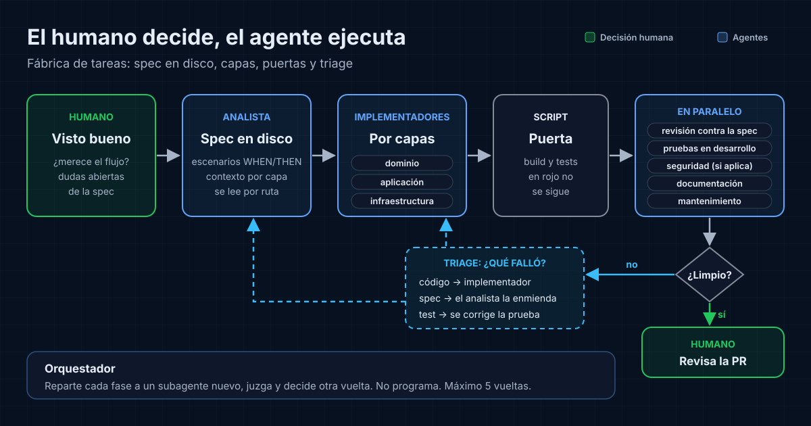

La escena típica
Pides a un agente de código que añada un endpoint REST a un servicio backend. En tres minutos tienes controlador, caso de uso, repositorio, tests y un mensaje de commit impecable. Abres el diff: 600 líneas. El endpoint funciona, pero el log no sigue el formato del equipo, el error de validación devuelve un 500 y hay una consulta nueva sin índice.
Nada de eso es grave. El problema es otro: escribir ya no cuesta, y revisar cuesta lo mismo que antes. Si todo lo que genera el agente pasa por tus ojos sin filtro previo, el cuello de botella se ha movido de tus manos a tu atención.
De asistente a flujo
Usar un agente como un chat más rápido deja el proceso igual: una persona pide, la máquina produce y la misma persona valida todo. Un flujo agéntico cambia la forma del proceso. Hay fases con una entrada y una salida claras, cada fase tiene agentes con un encargo acotado y el paso a la siguiente depende de un criterio que se puede comprobar.
La regla de fondo cabe en una línea: el humano decide, el agente ejecuta. Qué construir, qué se considera terminado y qué entra en main son decisiones humanas. Escribir el código, pasar los tests, revisar convenciones y redactar la documentación son trabajo delegable.
El ciclo: definir, implementar, verificar
Definir antes de delegar
La fase que más se suele saltar es la que más rinde. Antes de que nadie escriba código, un agente ayuda a convertir la petición en una tarea con alcance, ficheros afectados, qué queda fuera y criterios de aceptación verificables. La persona revisa esa definición y la aprueba. Corregir un malentendido aquí cuesta un párrafo; corregirlo en el diff cuesta una tarde.
En el ejemplo del endpoint, la definición diría qué códigos HTTP devuelve cada error, qué formato de log se usa y qué tests prueban el caso feliz y los fallos de validación.
Implementación repartida
Con la tarea definida, la implementación se puede repartir entre varios agentes con contextos pequeños: uno para la capa de dominio, otro para el adaptador REST, otro para los tests. Un contexto pequeño se equivoca menos que uno enorme que arrastra toda la conversación.
Verificación independiente
El agente que escribe el código no debería ser quien lo aprueba. Tiende a dar por bueno lo que acaba de razonar. La verificación funciona mejor con revisores separados, cada uno con un contexto limpio y un encargo concreto: funcionalidad frente a los criterios de aceptación, seguridad, mantenibilidad y convenciones del equipo. A eso se suma algo que no opina: ejecutar los tests en un entorno de desarrollo real.
El bucle
Los hallazgos de la verificación vuelven a implementación y el ciclo se repite hasta que el cambio supera todos los filtros. Dos detalles evitan que el bucle degenere. Primero, pedir a los revisores solo hallazgos que afecten a corrección o a los criterios de la tarea: un revisor al que se le pide encontrar problemas casi siempre encuentra alguno, y perseguirlos todos lleva a sobreingeniería. Segundo, limitar las vueltas. Si el cambio no converge, el problema suele estar en la definición, y eso vuelve a ser una decisión humana.
Skills: el conocimiento del equipo por escrito
Sin contexto, un agente escribe código correcto y genérico. El log con otro formato y el 500 de la escena inicial salen de ahí. Las skills son la forma de darle ese contexto sin repetirlo en cada prompt: carpetas con instrucciones, plantillas y scripts que el agente carga solo cuando la tarea lo pide.
Las que más se notan son las aburridas: cómo se organiza el código en la arquitectura del equipo, cómo se escribe un listener o un publisher del broker de mensajería, cómo se diseña un endpoint REST, qué se loguea y con qué formato, qué estrategia de testing se sigue. Una skill bien escrita convierte una revisión de convenciones en una comprobación casi mecánica.
Tratarlas como código ayuda: versionadas, revisadas en PR y distribuidas al equipo como un paquete, por ejemplo mediante plugins. Una skill que solo vive en el portátil de una persona no es conocimiento del equipo.
Qué no delegar
- Aprobar la definición de la tarea y sus criterios de aceptación.
- Decisiones de diseño con impacto fuera del cambio: contratos públicos, modelos de datos, dependencias nuevas.
- Tradeoffs de negocio y cualquier acción que gaste dinero o toque producción.
- El merge. La última revisión es humana, aunque llegue un diff mucho más limpio.
Límites y costes
Un flujo así no es gratis. Cada revisor es otra ejecución de un modelo, y en tareas pequeñas el ciclo completo cuesta más de lo que ahorra: renombrar una variable no necesita cuatro agentes. Conviene empezar simple y añadir fases solo cuando resuelvan un problema que ya existe.
La verificación automática tampoco es mejor que sus referencias. Si los tests son flojos o las skills describen convenciones que nadie sigue, los agentes aprobarán con toda la confianza del mundo cambios mediocres. Y el mantenimiento se desplaza: parte del tiempo que antes iba a escribir código pasa a mantener skills, definiciones de agentes y criterios de salida.
Conclusión
Lo que convierte un asistente en un flujo agéntico es decidir qué fases existen, qué criterio abre cada puerta y quién lo aplica. Cambiar de modelo no sustituye ese trabajo. Si la persona se queda con la definición, las decisiones de diseño y el merge, los agentes pueden encargarse de casi todo lo demás. Y la revisión humana deja de ser la de un diff de 600 líneas sin filtrar para ser la de un cambio que ya pasó por varios filtros.
Fuentes
- Anthropic, "Building effective agents", diciembre 2024.
- "Best practices for Claude Code", documentación de Claude Code.
- "Agent Skills", documentación de la plataforma de Claude.